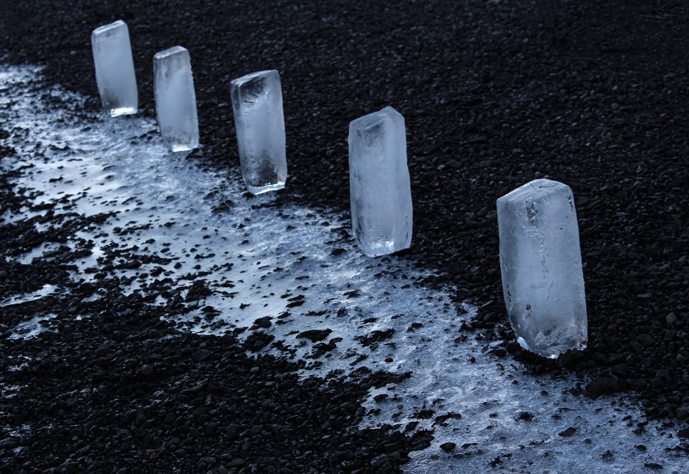
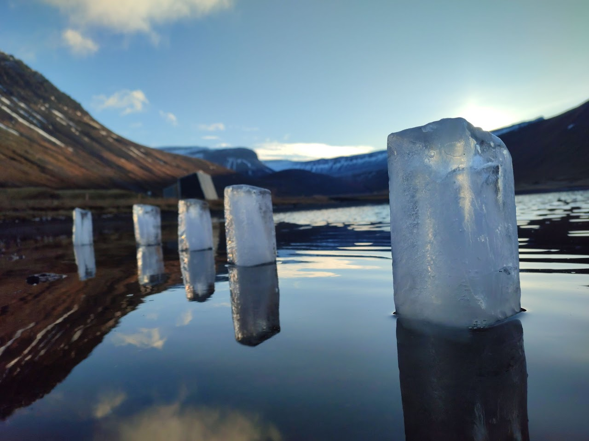

Internal borders
2023 · Created during ArtsIceland residency funded by Culture moves Europe · Ísafjörður, Iceland

Concept
During the residency in Iceland, we also remotely took part in Internally Displaced Landscape project (organized by the Land Art Festival @mohrytsia , which has been held for many years in a row in the Mogrytsya village, which is now located in a dangerous zone) and reflected on it in parallel. About shifting, migrating borders, internal and external, and all that they mean. Being so far from our war, we voluntary or involuntarily evaluated how it feels from afar. What impact does it have? It is very naive to think that this war is limited by our borders, that it has borders at all. This is the element of death, war. Borders are such a fragile thing. Current wars on the planet are responsible for more than 5.5% of greenhouse gas emissions (and this is according to data provided by countries in conflict, which means that the number is much higher). According to the latest estimates, the greenhouse gas emissions caused during the first year since the Russian invasion of Ukraine amount to the equivalent of 120 million tons of carbon dioxide emissions. We remember first of all genocide, sure, but it is also ecocide. The damage caused by the armed aggression of the Russians is incalculable. So yes, the war will be felt everywhere, even in faraway beautiful Iceland. Air and water pollution, global warming, melting glaciers. Borders are melting
 